Oil Pan: Service and Repair
Oil Pan
Removal: Engine removal is not required in this procedure.
a. Make sure jacks and safety stands are placed properly and hoist brackets are attached to the correct positions on the engine.
b. Apply parking brake and block rear wheels so the car will not roll off stands while you are working under it.
CAUTION: Use fender covers to avoid damaging painted surfaces. Disconnect wiring connectors carefully to avoid damage. Mark the wiring and hoses to avoid misconnection. Be sure they do not contact other wiring or hoses or interfere with other parts.
NOTE: Anti-theft radios have a coded theft protection circuit. Be sure to get the customer's code number before:
a. Disconnecting the battery.
b. Removing the No.39 (10 A) fuse in the under-hood fuse/relay box.
c. Removing the radio. After service, reconnect power to the radio and turn it on. The word "CODE" will be displayed. Enter the customer's 5-digit code to restore radio operation.
1. Disconnect the battery negative terminal first then the positive terminal.
2. Remove the radiator cap.
Warning: Use care when removing the radiator cap to avoid scalding by hot engine coolant or steam.
3. Remove the front wheels.
4. Remove the damper forks.
5. Disconnect the suspension lower arm ball joints.
6. Remove the driveshafts.
NOTE: Coat all precision finished surfaces with clean engine oil or grease. Tie plastic bags over the driveshaft ends.
7. Remove the air cleaner housing.
8. Drain the engine oil. Reinstall the drain bolt using a new washer.
9. Loosen the radiator drain plug and drain the coolant.
10. Drain the differential oil. Reinstall the drain plug using a new washer.
11. Raise the hoist to full height, then attach a chain hoist to the engine.
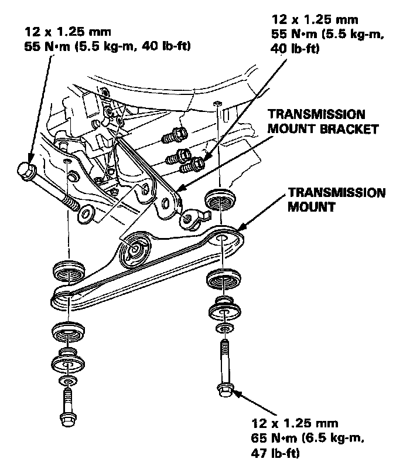
12. Remove the transmission mount and mount bracket.
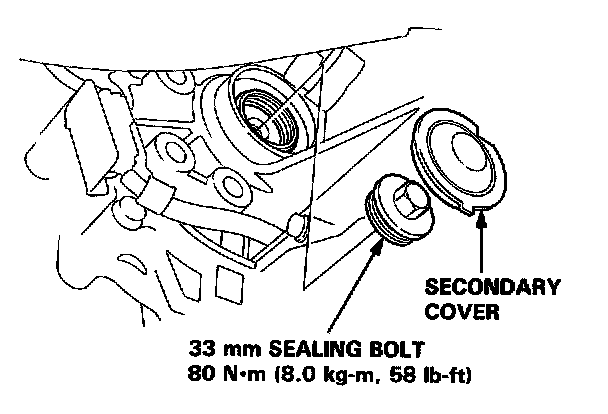
13. Remove the secondary cover and 33 mm sealing bolt.
NOTE: Shift to 1st gear (M/T) or P (A/T) to lock the secondary shaft.
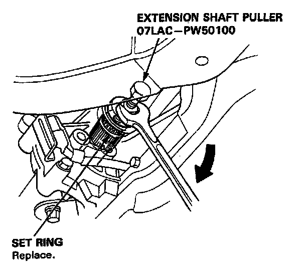
14. Disconnect the extension shaft from the differential with the special tool.
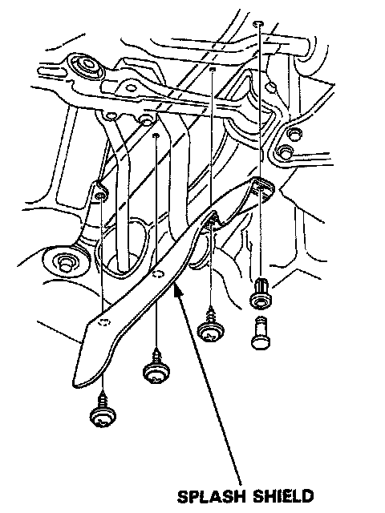
15. Remove the splash shield.
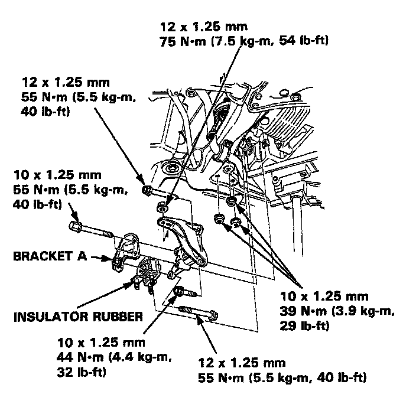
16. Remove the front stopper bracket A, the front stopper insulator rubber and the left front engine mount bracket.
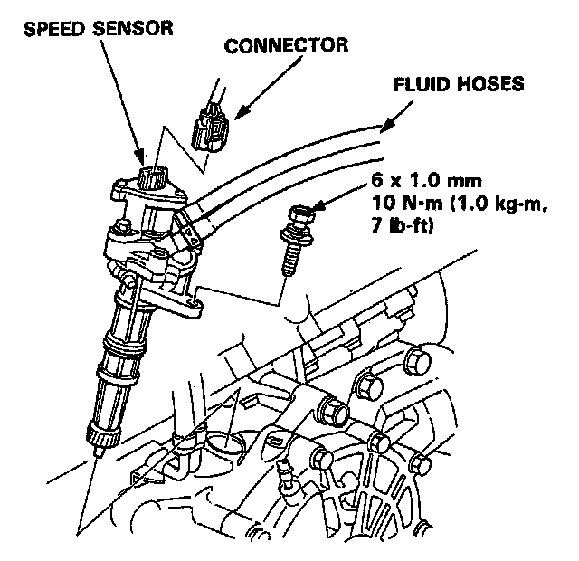
17. Remove the power steering speed sensor.
a. Do not disconnect the fluid hoses.
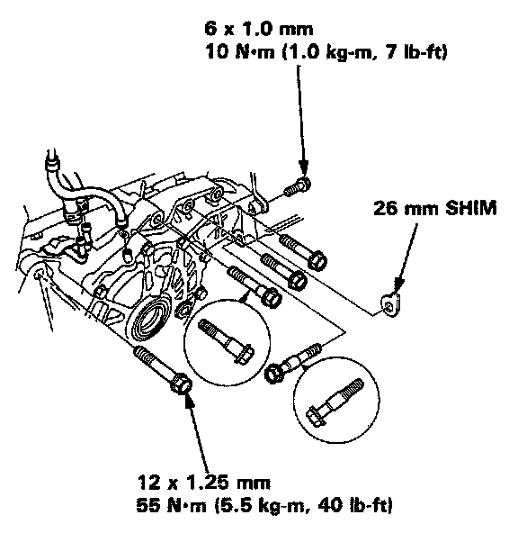
18. Disconnect the oil cooler hoses and the breather hose, then remove the differential mounting bolts and 26 mm shim.
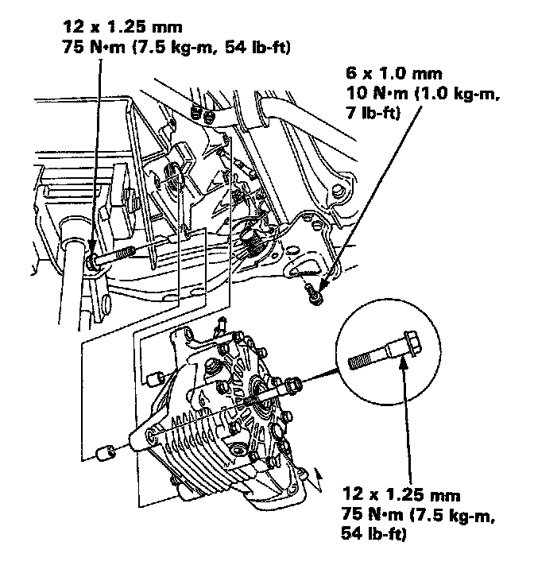
19. Remove the differential mounting bolts, then remove the differential assembly.
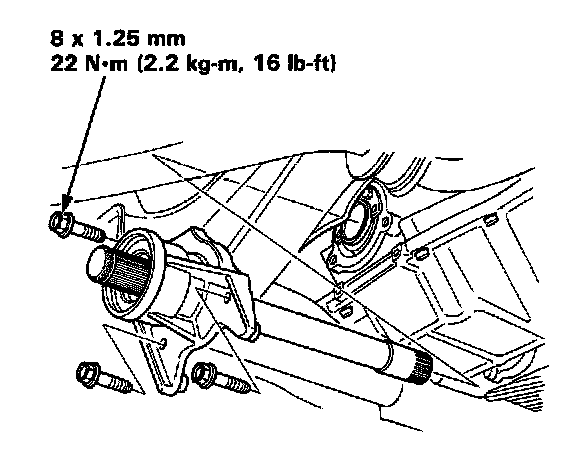
20. Remove the intermediate shaft.
21. Remove the A/C bracket.
NOTE: When installing the A/C bracket, tighten the bolts on the oil pan first, then those on the engine block.
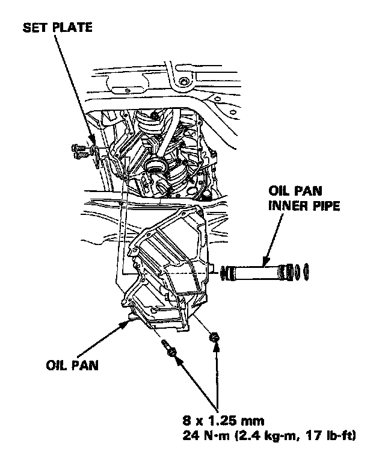
23. Remove the set plate, then remove the oil pan inner pipe.
24. Remove the oil pan.
Installation: Install the oil pan in the reverse order of removal:
a. Always use new 0-rings.
b. Oil pan and engine block mating surface must be clean.
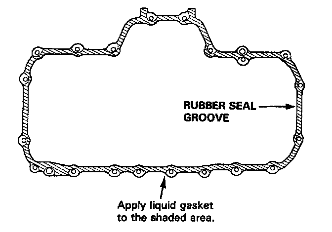
Specified Torque: 24 N.m (2.4 kg-m, 17 lb-ft).
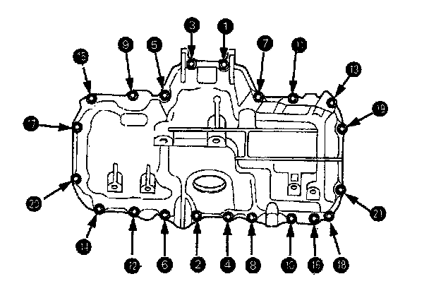
1. Apply liquid gasket to the block mating surface, then install the oil pan.
NOTE: Use liquid gasket, Part No.08718-0001. Check that the mating surfaces are clean and dry before applying liquid gasket. Apply liquid gasket evenly, in a narrow bead centered on the mating surface. Do not apply liquid gasket to rubber seal groove. To prevent leakage of oil, apply liquid gasket to the inner threads of the bolt holes. Do not install the parts if 20 minutes or more have elapsed since applying liquid gasket. Instead, reapply liquid gasket after removing old residue. After assembly, wait at least 30 minutes before filling the engine with oil.
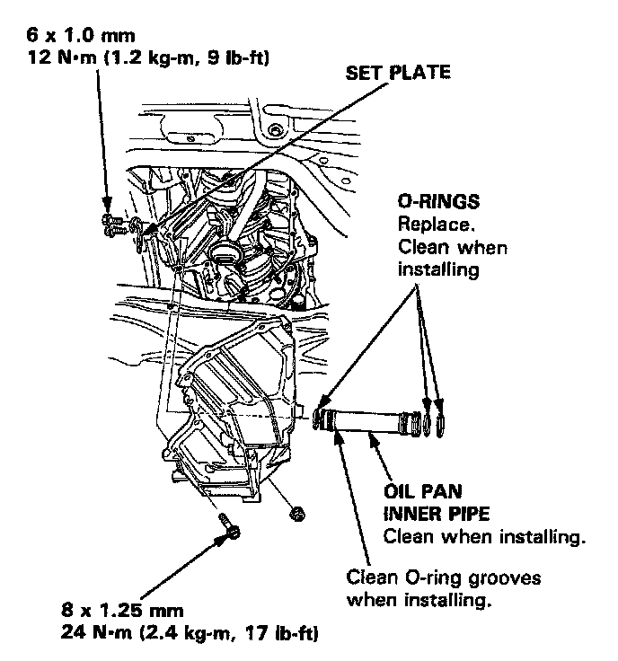
2. Install the oil pan inner pipe, then install the set ring.
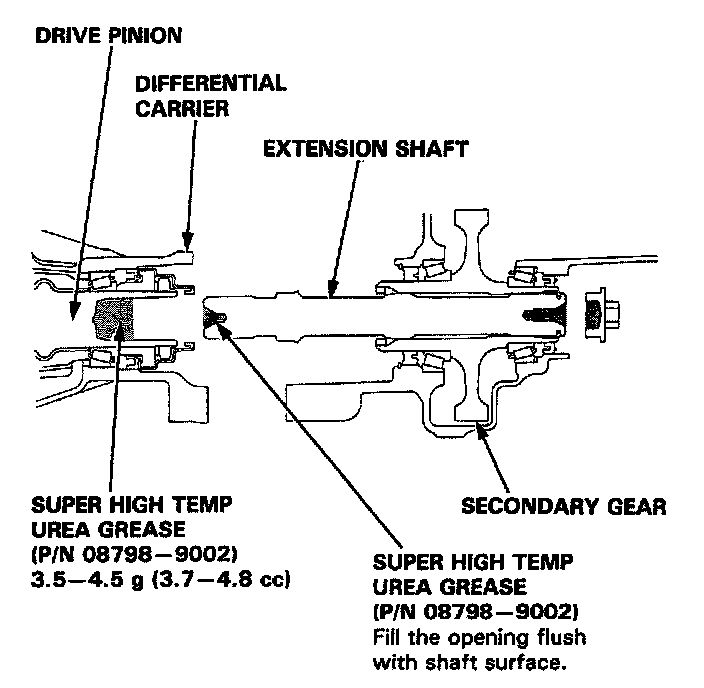
3. Apply Super High Temp Urea Grease (PIN 08798-9002) to the extension shaft splines.
4. Fill the opening of the drive pinion and extension shaft with Super High Temp Urea Grease (P/N 08798-9002), as shown.
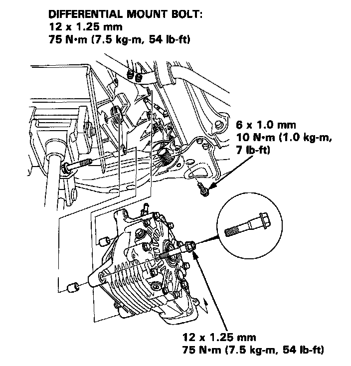
5. Install the differential assembly. Select the appropriate 26 mm shim whenever the oil pan or the cylinder block is replaced.
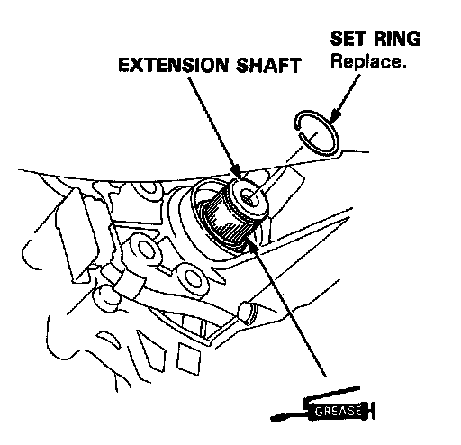
6. Apply grease to the spline of the extension shaft, then install the new set ring.
7. Fill the opening of the extension shaft and 33 mm sealing bolt with Super High Temp Urea Grease (P/N 08798-9002), as shown.
8. Apply liquid gasket (PIN 08718-0001) to the 33 mm sealing bolt threads.
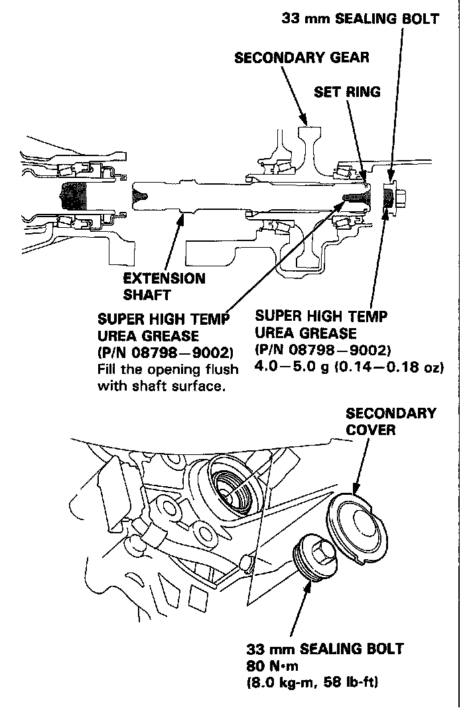
9. Install the extension shaft.
10. Shift the manual transmission to 1st gear or automatic transmission to P position.
11. Install the 33 mm sealing bolt and secondary cover on the transmission housing.
12. Check the following items after reassembly.
a. Refill the differential with hypoid gear oil.
b. Refill the engine with oil.
c. Refill the cooling system with coolant.
d. Make sure the set rings on the driveshafts are completely inserted into the groove of the differential or intermediate shaft.